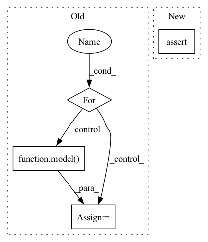

Pattern ID :10183
Before Change
tokenizer = AutoTokenizer.from_pretrained(tokenizer_name)
results = {}
for label in labels:
hypothesis = f"This example is {label}."
features = tokenizer.encode(input_text, hypothesis, return_tensors="pt",
truncation_strategy="only_first")
logits = model( features) [0]
entail_contradiction_logits = logits[:, [0, 2]]
probs = entail_contradiction_logits.softmax(dim=1)
prob_label_is_true = probs[:, 1]
results[label] = prob_label_is_true.item()
return resultsAfter Change
if isinstance(input_text, list):
// Must have a consistent amount of examples
assert (len(input_text) == len(labels))
// TODO: implement proper batching
results_list = []
for text, labels in zip(input_text, labels):In pattern: SUPERPATTERN
Frequency: 5
Non-data size: 4
Instances Fragment ID: 35995025
Project Name: backprop-ai/backprop
Commit Name: 7f0b95ef8169196944a99724b719f73413b4f159
Time: 2020-12-28
Author: ojasaarkristo@gmail.com
File Name: kiri/models/classification.py
M Class Name: AnonimousClass
N Class Name: AnonimousClass
M Method Name: zero_shot(5)
N Method Name: zero_shot(5)
M Parent Class:
N Parent Class:
M File Name: kiri/models/classification.py
N File Name: kiri/models/classification.py
M Start Line: 38
M End Line: 49
N Start Line: 49
N End Line: 69
Before Change
train_loader = torch.utils.data.DataLoader(train_dataset, batch_size=batch_size, shuffle=shuffle)
criterion = torch.nn.MSELoss().to(device)
for batch_data in train_loader:
encoder_inputs, labels = batch_data
outputs = model( encoder_inputs, edge_index)
assert outputs.shape == (batch_size, node_count, num_for_predict)
def test_mstgcn():
After Change
outputs1 = model(encoder_inputs, edge_index_seq)
outputs2 = model(encoder_inputs, edge_index_seq[0])
assert outputs1.shape == (batch_size, node_count, num_for_predict)
assert outputs2.shape == (batch_size, node_count, num_for_predict)
def test_mstgcn():
Fragment ID: 35995021
Project Name: benedekrozemberczki/pytorch_geometric_temporal
Commit Name: 8efa512ff3ac06546a082de036a85428720abd7a
Time: 2021-03-20
Author: He_YX@outlook.com
File Name: test/convolutional_test.py
M Class Name: AnonimousClass
N Class Name: AnonimousClass
M Method Name: test_astgcn(0)
N Method Name: test_astgcn(0)
M Parent Class:
N Parent Class:
M File Name: test/convolutional_test.py
N File Name: test/convolutional_test.py
M Start Line: 248
M End Line: 285
N Start Line: 236
N End Line: 266
Before Change
"/Users/jackturner/work/nds/data/ResNet.json", searchspace="ResNet"
)
data = torch.rand((1, 3, 32, 32))
for _ in range(10):
model = searchspace.sample_random_architecture()
y, _ = model( data)
print(y.size())
minibatch: torch.Tensor = torch.rand(10, 3, 32, 32)
After Change
score = proxy.score(model, minibatch)
t2 = time.time()
assert (t2-t1) < 10.
assert score > 0
Fragment ID: 35995017
Project Name: jack-willturner/gymnastics
Commit Name: 4fc66122fd76c42dbed118821adf774e57ce55c6
Time: 2021-08-07
Author: jackwilliamturner@icloud.com
File Name: test/test_proxy_naswot.py
M Class Name: AnonimousClass
N Class Name: AnonimousClass
M Method Name: test_proxy_naswot(0)
N Method Name: test_proxy_naswot(0)
M Parent Class:
N Parent Class:
M File Name: test/test_proxy_naswot.py
N File Name: test/test_proxy_naswot.py
M Start Line: 9
M End Line: 17
N Start Line: 13
N End Line: 32
Before Change
train_loader = torch.utils.data.DataLoader(train_dataset, batch_size=batch_size, shuffle=shuffle)
criterion = torch.nn.MSELoss().to(device)
for batch_data in train_loader:
encoder_inputs, labels = batch_data
outputs = model( encoder_inputs, edge_index)
assert outputs.shape == (batch_size, node_count, num_for_predict)
def test_astgcn_change_edge_index():
After Change
outputs1 = model(encoder_inputs, edge_index_seq)
outputs2 = model(encoder_inputs, edge_index_seq[0])
assert outputs1.shape == (batch_size, node_count, num_for_predict)
assert outputs2.shape == (batch_size, node_count, num_for_predict)
def test_chebconvatt():
Fragment ID: 35995019
Project Name: benedekrozemberczki/pytorch_geometric_temporal
Commit Name: 8efa512ff3ac06546a082de036a85428720abd7a
Time: 2021-03-20
Author: He_YX@outlook.com
File Name: test/convolutional_test.py
M Class Name: AnonimousClass
N Class Name: AnonimousClass
M Method Name: test_mstgcn(0)
N Method Name: test_mstgcn(0)
M Parent Class:
N Parent Class:
M File Name: test/convolutional_test.py
N File Name: test/convolutional_test.py
M Start Line: 291
M End Line: 328
N Start Line: 293
N End Line: 311